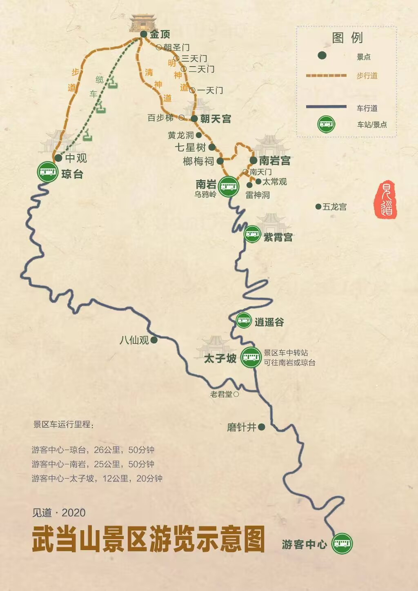
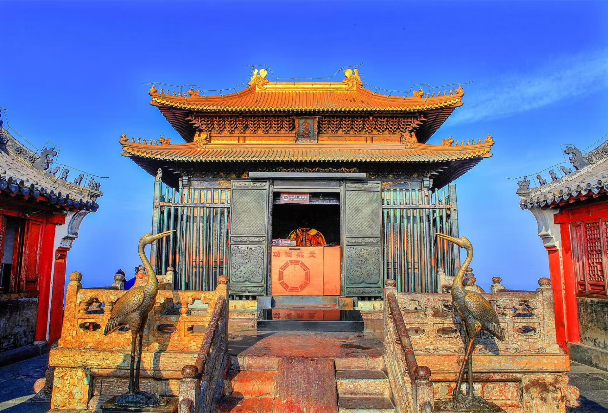

| 5A级景区——武当山 | 返回首页 |
|---|---|
|  | 武当山位于湖北省十堰市境内，自然胜景有箭镞林立的72峰、绝壁深悬的36岩、激湍飞流的24涧、云腾雾蒸的11洞、玄妙奇特的10石9台等；人文景观有规模宏伟的道教建筑群和众多的道教文物，故被誉为“道教文物宝库”。武当山山门内景区主要由金顶景区、南岩景区、太子坡景区、紫霄景区等组成。武当山景区路线呈一个大“Y”字型。太子坡是中间的换乘中心。索道通往的金顶景区和南岩宫景区在“Y”字的两头。两个核心景区之间步行可以连通。不想走回头路的话就必须采取索道和步行相结合的方式。
初次去武当山旅游最好有导游讲解，或者先通过网络等渠道了解每个景点的文化内涵，不至于光去打卡拍照了。武当山为一票进山制，3天内有效。三天内第二次进山或者多次进山，每次需要购买20元观光车票，需要在首次进山前申明并办理相关手续。若不想出山可以住景区内民宿、酒店，旺季价格相对较高。但有机会在金顶看日出、日落、晚霞、云海等壮观景色。一天游览武当山的时间很紧，只能以金顶景区、南岩景区、太子坡景区、紫霄景区为主要浏览景点。两日时间较为充裕，而且可以选择上行索道与下行步行相结合的方式，能够全面覆盖景区内大部分景点。 |
|  | 核心景点简介 ： 太子坡：又名复真观。现基本保持当年规模，是武当建筑群中的一个较大单元。复真观建于明永乐十年（公元1412年），清康熙二十二年（公元1683年）重修。位于狮子峰前，现存建筑20栋，建筑面积3505平方米，占地6万平方米。中轴线上有照壁、梵帛炉、龙虎殿、大殿、太子殿。左侧道院建皇经堂、芷经阁、庙亭、斋房，随山势重叠错落。前有五云楼，五层楼翼角立柱上架设12根梁枋，交叉叠阁，为大木建筑中少见的结构，有一柱十二梁之称。
金顶：建于永乐十七年（公元1419年），延天柱峰环绕，周长345米，墙基厚2．4米，墙厚1．8米，城墙最高处达10米，用条石依岩砌筑，每块条石重达500多千克，按中国天堂的模式建有东、南、西、北四座石雕仿木结构的城楼象征天门。该石雕建筑在悬崖徒壁之上，设计巧妙，施工难度大，是明代科学与艺术相结合的产物。
金殿：明代铜铸仿木结构宫殿式建筑，位于天柱峰顶端的石筑平台正中，面积约160 平方米，朝向为东偏南8°。四周立柱12根，柱上叠架、额、枋及重翘重昂与单翘重昂斗拱，分别承托上、下檐部，构成重檐底殿式屋顶。正脊两端铸龙对峙。四壁于立柱之间装四抹头格扇门。殿内顶部作平棋天花，铸浅雕流云纹样，线条柔和流畅。地面以紫色石纹墁地，洗磨光洁。殿内于后壁屏风前设神坛，塑真武大帝坐像，左侍金童捧册，右侍玉女端宝，水火二将，执旗捧剑拱卫两厢。坛下玄武一尊，为金婉合体。坛前设香案，置供器。神坛上方高悬馏金匠额，上铸清圣祖爱新觉罗·玄烨手迹“金光妙相”四字。 |